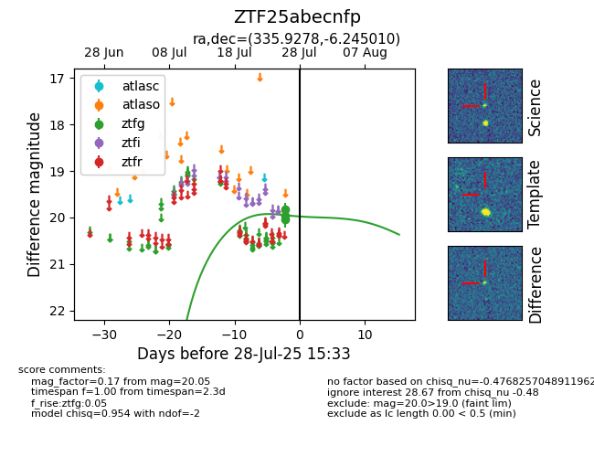

Target ZTF25abecnfp at 2025-07-28 15:33, see:
FINK: fink-portal.org/ZTF25abecnfp
Lasair: lasair-ztf.lsst.ac.uk/objects/ZTF25abecnfp
ALeRCE: alerce.online/object/ZTF25abecnfp
alt names
ZTF25abecnfp (ztf,fink)
coordinates:
equatorial (ra, dec) = (335.9278,-6.24501)
galactic (l, b) = (56.8984,-49.18240)
photometry
last ztfg=20.05
3 ztfg detections
